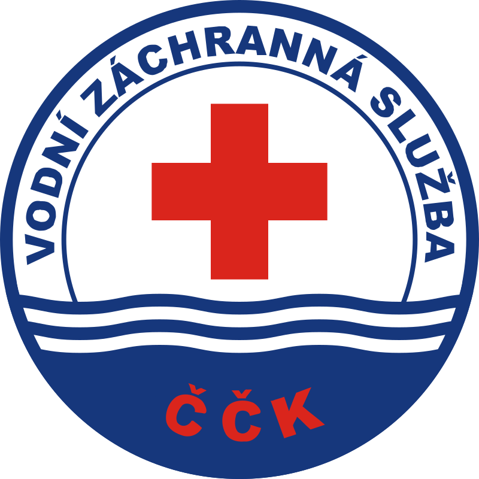
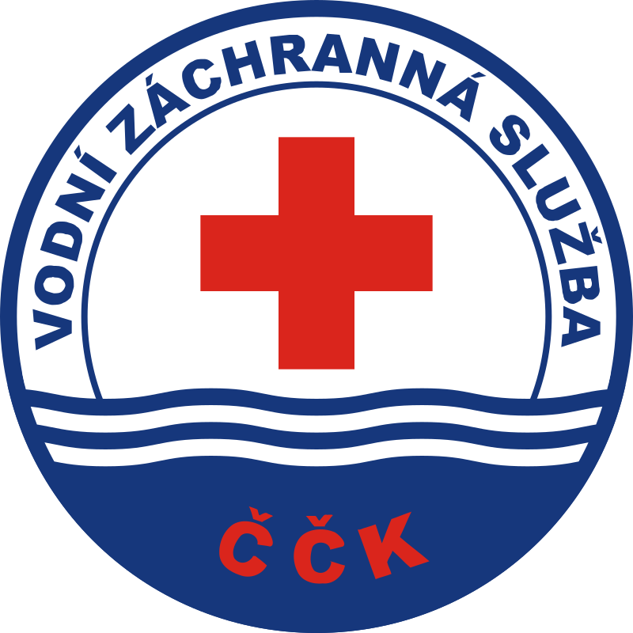

Co Je To "Vodní Záchranná Služba"
Kdo jsme
Vodní záchranná služba ČČK, z.s. (dále VZS) byla založena v roce 1968. Je největší a nejstarší celostátní organizací věnující se vodní záchraně, záchranářskému sportu, vzdělávání, prevenci a dalším aktivitám spojeným s vodním prostředím a jejím okolím. V současné době působí v deseti krajích České republiky a je aktivní součástí integrovaného záchranného systému ČR.
VZS je členem mezinárodní organizace vodní záchrany International Life Saving Federation (ILS) a zastupuje Českou republiku na mezinárodní úrovni.
VZS je kolektivním členem Českého červeného kříže (ČČK) a dodržuje jeho principy a poslání.
VZS je členem České rady dětí a mládeže (ČRDM) protože právě tato věková skupina je u nás velmi početná. Posláním ČRDM je podporovat podmínky pro kvalitní život a všestranný rozvoj dětí a mladých lidí. Své poslání naplňuje ČRDM tím, že podporuje mimoškolní výchovu a činnost svých členů, zejména snahu o vytváření právních, hospodářských, společenských a kulturních podmínek vhodných pro jejich činnost. ČRDM hájí zájmy svých členů vůči domácím i zahraničním orgánům, organizacím a institucím.
Vodní záchranná služba ČČK má pět hlavních pilířů své činnosti
- Záchrana a poskytování neodkladné rozšířené první pomoci na vodních plochách a v jejich blízkosti, včetně technické pomoci a záchrany.
- Vodní záchranná služba ČČK, z.s. jako aktivní součást IZS.
- Sport a volnočasové aktivity pro mládež i dospělé, včetně prevence tonutí.
- Komplexní vzdělávací řád záchranářů – od juniorů po specialisty na specifické typy vodního prostředí a lektory/instruktory/školitele nejen pro složky IZS.
- Prevence proti tonutí
1. Záchrana a poskytování neodkladné rozšířené první pomoci na otevřených vodních plochách a v jejich blízkosti, včetně technické pomoci a záchrany.
Utonutí je v České republice druhou nejčastější úrazovou příčinou náhlé smrti dětí a mládeže a čtvrtou u dospělé populace. Z tohoto pohledu je činnost VZS na velkých vodních plochách zcela nezastupitelná a nenahraditelná. Veškerou činnost dělají vodní záchranáři zdarma ve svém volném čase, přesto na vysoce profesionální úrovni.
Vodní záchranná služba ČČK je lídrem v oblasti záchrany ve vodním prostředí. Jako jediná celostátní organizace svého druhu působí, zejména v letních měsících, na vybraných vodních plochách, kde zpravidla funguje v režimu 24 hod/nonstop. Jakožto ostatní složka Integrovaného záchranného systému (IZS) je pak běžně využívána k primárním zásahům na vodních plochách, nebo jejich blízkosti, krajskými operačními středisky Hasičského záchranného sboru ČR (HZS), Zdravotnických záchranných služeb (ZZS), Policie ČR.
VZS působí na významných přehradách, které jsou bez rychlého nasazení motorového plavidla obtížně dostupné. Dnes VZS používá několik typů záchranářských plavidel v rámci standardizace výkonu služby. Jedná se o plavidla typu Sportis 7500, které jsou osazeny 2 x 150 HP motory a MS Boat různých velikostí o výkonech 100-150 HP. Dále užíváme plavidla Pioneer boats, čluny Adventure a další.
Zcela zásadní je i velmi dobrá znalost zajišťovaných vodních ploch, břehů a okolí, což je pro rychlý zásah a záchranu života nebo majetku velmi často naprosto klíčové. Rychlá odezva např. na výzvu tonutí, nebo stavu bezprostředně po tonutí, zásadně zvyšuje šanci na přežití. VZS poskytuje své čluny i jako dopravní prostředek posádkám ZZS do obtížně dostupných míst a pro následný rychlý transport pacienta člunem VZS k sanitnímu vozu nebo vrtulníku Letecké záchranné služby (LZS). Vybrané stanice VZS jsou vybaveny vozidly RZA (rychlý záchranný automobil) typu VW Transporter, nebo Ford Ranger pro zásahy i mimo vodní plochu, např. chatové oblasti a obce v okolí vodní plochy.
VZS je přímo napojena na aplikaci Záchranka, díky které obdržíme automatické avízo o použití aplikace v zásahovém perimetru VZS na vodní ploše, což je vodní plocha a břehová část do vzdálenosti cca 300 metrů (dle místních podmínek).
Pro zásahovou činnost a příjem PKV (příkaz k výjezdu) používáme aplikaci GINA, která je ve všech 10 krajích, kde VZS působí, napojena na KOPIS HZS kraje. PKV zas strany Zdravotnických záchranných služeb je v každém kraji individuální. Pro spojení pomocí RDST jsme uživateli státního systému PEGAS a dále používáme analogové RDST v rámci frekvencí HZS pro součinnostní spojení na místě události.
2. Vodní záchranná služba ČČK jako aktivní součást IZS
VZS je složkou IZS na základě „Dohody o plánované pomoci na vyžádání“ uzavřené s Ministerstvem vnitra – Generálním ředitelstvím HZS ČR a je také zapsána v Ústředním poplachovém plánu ČR a v poplachových plánech krajů.
Již od katastrofálních povodní v roce 1997 prokázala VZS svojí akceschopnost v těch nejnáročnějších podmínkách. VZS má specialisty na zásahy na volné a tekoucí vodě, kteří jsou nasazováni do složitých podmínek, kde díky svému výcviku a vybavení jsou schopni zajistit bezpečnou evakuaci, nebo záchranu lidí a majetku.
VZS a její záchranné týmy se od roku 1997 účastnily všech povodní, ať už většího či lokálního významu. VZS je nasazována nejen při povodních či záplavách, ale i v případě pátracích akcí na vodě a v její blízkosti po pohřešovaných nebo utonulých osobách. VZS je rovněž nasazována při likvidačních pracích a záchraně majetku. Účastnili jsme se i akcí jako bylo tornádo na jižní Moravě v červnu 2022.
3. Sport a volnočasové aktivity pro mládež i dospělé.
Každoročně se juniorská i seniorská reprezentace VZS účastní Mistrovství Evropy a/nebo Mistrovství světa ve vodním záchranném sportu (Lifesaving). VZS má systém postupových soutěží, kde se všichni závodníci nominují do reprezentace dle svých výsledků.
Pobočné spolky připravují sportovce při pravidelných trénincích a pořádají jednotlivé závody, přičemž vyvrcholením soutěžní sezóny je pak Mistrovství republiky dětí a mládeže v disciplínách ILS a také Mistrovství republiky v plážových disciplínách podle pravidel ILS. Dle výsledků v těchto nominačních závodech jsou pak vybráni reprezentanti na Mistrovství Evropy a Mistrovství světa.
Pořádáme závody také pro seniorskou členskou základnu, příkladem jsou Blanenská 250 či Tvrdošíjní v Jablonci na Nisou. Členové prověří svou zdatnost také při Mistrovství republiky na volné vodě.
4. Komplexní vzdělávací řád záchranářů – od juniorů po specialisty na specifické typy vodního prostředí a lektory/instruktory nejen pro složky IZS.
Ve své práci může VZS, jako jediná v ČR, těžit z členství v ILS, což je největší celosvětová asociace vodní záchrany. VZS má vlastní vzdělávací program, který připravuje členy již od 6 let věku na jejich působení ve VZS.
VZS spolupracuje při výcviku příslušníků a zaměstnanců hlavních i ostatních složek IZS, kde provádí výcviky v oblasti ovládání motorových plavidel, hladinové služby, divoké vody a zásahu v povodních a specializované záchrany na ledě.
VZS je pro oblast preventivní a záchranné činnosti autorizovanou osobou a zároveň má akreditované kurzy Plavčík, Mistr Plavčí a Záchranář na volné vodě. Tyto kvalifikace byly transformovány do systému Národní soustavy kvalifikací (NSK) formou autorizovaných zkoušek v souladu s Národní soustavou povolání (NSP). Doplňujeme i certifikované kurzy v dalších systémech či v kooperaci, jako například Záchranářské minimum, Záchrana na zamrzlé vodní hladině, apod.
Frekventanti kurzů VZS jsou současně připravováni na činnosti v rámci zásahové činnosti v IZS při řešení mimořádných událostí. Úzká spolupráce se složkami IZS v oblasti vzdělávání a výcviku je jednou z priorit, na které VZS klade velký důraz.
VZS je také Pověřenou osobou k ověřování praktických dovedností při vedení malého plavidla v kategoriích M a S, které vydává Státní plavební správa.
5. Prevence proti tonutí, včetně preventivních programů
Problematika bezpečného pobytu ve vodě a tonutí je v Česku velkým, ale nedostatečně řešeným, tématem. I přes svoji vnitrozemskou polohu dojde ročně přibližně ke 190 utonutím. To je, v přepočtu na jednoho obyvatele, dvakrát více než v evropských přímořských zemích, jako jsou Španělsko či Velká Británie. V počtu utonulých převládají muži a v posledních letech rovněž dochází k nárůstu tonutí malých dětí a neplavců v domácích bazénech.
BEZPEČNĚ VE VODĚ je preventivní program VZS, kdy na hromadných akcích zejména složek IZS, ale i na školních a mimoškolních akcích nejen že ukazujeme svojí činnost, ale zejména vysvětlujeme rizika spojená s pohybem a pobytem ve vodním prostředí. Rizika, která číhají na každého z nás a která v Česku podceňujeme. Nejrizikovější skupinou jsou děti a v tomto ohledu je potřeba zvláštního zřetele. Základem je děti naučit co nejdříve plavat, ale ani plavecké schopnosti nezaručí jejich bezpečí. Dohled u vody, zejména pak u přehrad a rybníků je nezbytný, protože při zanoření pod vodu je velmi obtížné kohokoli nalézt. Také používání zcela nevhodných, až život ohrožujících sebezáchranných prostředků je problém. Často lidé pořizují dětské nafukovací rukávky nebo kruhy v ceně pár desítek korun, často pochybné kvality. Přitom oboje je pro dítě neplavce nebezpečné. Každoročně vodní záchranáře můžete vidět na desítkách takovýchto akcí a ukázek.
Druhým preventivním programem je ZACHRAŇ ŽIVOT. Vytvořili jsme bezpečností tabule, které od léta 2023 ve spolupráci s Povodím Vltavy, s.p. osazujeme na Vltavskou kaskádu Lipno, Orlík a Slapy. V roce 2024 plánujeme rozšíření i na další povodí po celém Česku, zejména pak na přehrady, kde VZS v letních měsících působí. Skrze tyto tabule se snažíme návštěvníkům přehrad pomocí jednoduchých piktogramů sdělit, jak mají poskytnout první pomoc a jakých aktivit se mají vyvarovat. Máme několik druhů těchto tabulí, některé jsou určeny na pláže na přehradách a do kempů, jiné do přístavišť nebo na řeky k jezům. Tyto tabule byly po odborné stránce konzultovány s naším partnerem, Českou resuscitační radou. Na tabulích najdete i QR kód na stažení aplikace Záchranka, která je dalším z partnerů tohoto projektu.